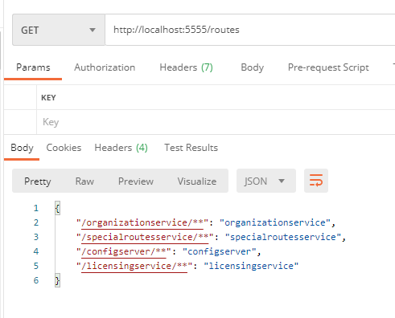
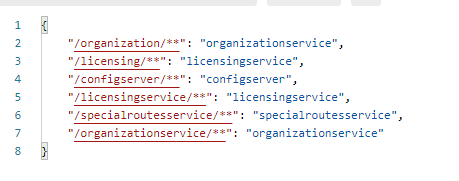
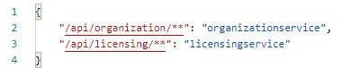
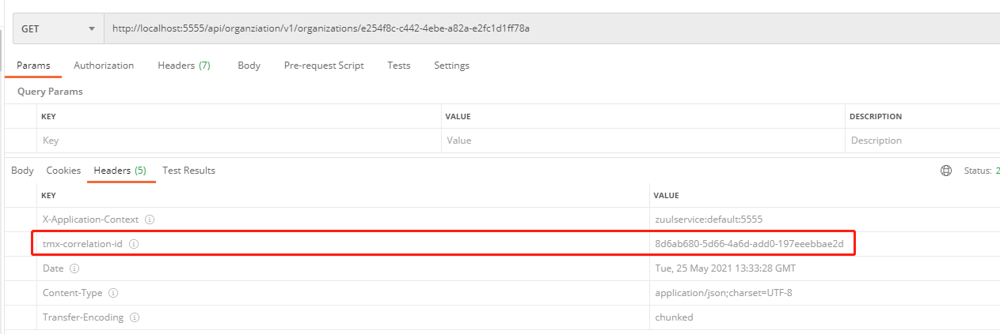
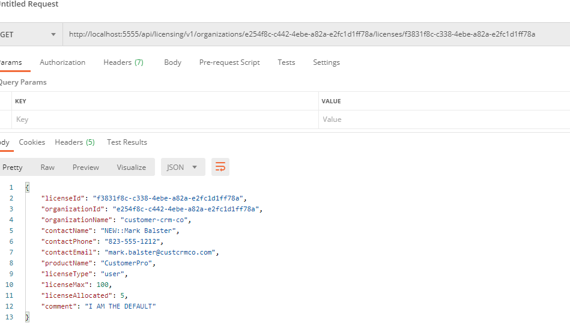

跨多个服务调用的横切关注点：安全、日志记录、用户跟踪
直接构建这些功能的问题
每个服务很难始终实现这些功能
正确地实现这些功能是个挑战
所有服务中创建顽固依赖，难以在无需重新编译和部署的情况下添加新功能，共享库的核心功能升级也变得困难
解决方法 服务网关 ：将这些横切关注点抽象成独立的，且作为应用程序中所有微服务调用的过滤器和路由器的服务。服务网关作为单个策略执行点，所有调用都通过其进行路由，然后被路由到最终目的地
Spring Cloud 和 Netflix的Zuul
所有服务调用放在一个URL下面，使用服务发现映射到实际的服务实例
对流经服务网关的每个服务调用注入关联ID
从客户端发回的HTTP响应中注入关联ID
构建动态路由机制，将各个组织路由到服务实例端点，该端点与其他人使用的服务实例端点不同
服务网关 没有网关：直接调用服务，开发人员没法轻易实现诸如安全性或日志记录之类的横切关注点
有网关：客户端调用服务网关来调用服务，服务网关分离被调用的URL；此外还充当中央策略执行点 ，使得横切关注点在一个地方实现
横切关注点种类：
静态路由，服务设置单个URL后面
动态路由，根据请求和调用者身份进行智能路由（如参与测试版的客户可以路由到测试版本服务集群）
验证与授权，服务网关用于检查服务调用者是否进行验证并被授权进行服务调用的场所
度量数据收集和日志记录，不应该在单个服务上收集数据和日志记录，而是通过服务网关集中收集
1 2 3 4 构建服务网关的注意点： 负载均衡器可能成为瓶颈 代码无状态，不存信息 代码轻量
Spring Cloud 和 Netflix Zuul Zuul功能
所有服务的路由映射到一个URL，可定义多个路由条目，使路由映射非常细粒度
构建对网关请求进行检测和操作的过滤器
建立Zuul SpringBoot项目 1 2 3 4 <dependency > <groupId > org.springframework.cloud</groupId > <artifactId > spring-cloud-starter-zuul</artifactId > </dependency >
为Zuul服务使用Spring Cloud注解 1 2 3 @SpringBootApplication @EnableZuulProxy public class ZuulServerApplication
配置Zuul与Eureka进行通信 Zuul中配置路由 Zuul核心：反向代理
反向代理：位于客户端和资源之间，负责捕获客户端的请求，然后代表客户端调用远程资源
Zuul将客户端调用映射到下游路由的几种机制：
通过服务发现自动映射路由
通过服务发现手动映射路由
通过静态URL手动映射路由
通过服务发现自动映射路由 Zuul可以根据eureka服务ID自动路由请求，而不需要配置
例如调用http://localhost:5555/organizationservice/v1/organizations/e254f8c-c442-4ebe-a82a-e2fc1d1ff78a
这里服务名称（organizationservice）充当服务网关查找服务物理位置的键
通过Eureka实现添加和删除服务实例，无需修改Zuul而实现自动路由
可以访问http://localhost:5555/routes来访问Zuul服务器管理的路由

使用服务发现手动映射路由 可以通过手动配置明确定义路由映射，来缩短组织名称，简化路由，而非单纯依赖EurekaID创建的自动路由
在zuulsvr的application.yml中
1 2 3 4 zuul: routes: organizationservice: /organization/** licensingservice: /licensing/**
即可自定义映射
配置完eurekaID自动路由依然存在

可通过配置排除这些自动映射的路由
1 2 3 4 5 6 zuul: ignored-services: '*' routes: organizationservice: /organization/** licensingservice: /licensing/**
也可通过使用/api之类的标记为所有服务增加前缀
最终路由映射

使用静态URL手动映射路由 Zuul可以路由不受Eureka管理的服务，例如一些python编写的服务等
1 2 3 4 5 zuul: routes: licensestatic: path: /licensestatic/** url: http://licenseservice-static:8081
问题：绕过Eureka，只有一条路径可以指向请求
开发人员可以手动配置Zuul来禁用Ribbon与Eureka集成，然后配置Ribbon将进行负载均衡的各个服务实例
1 2 3 4 5 6 7 8 9 10 11 12 13 zuul: routes: licensestatic: path: /licensestatic/** serviceId: licensestatic ribbon: eureka: enabled: false licensestatic: ribbon: listOfServers: http://licenseservice-static1:8081, http://licenseservice-static2:8082
处理非JVM任务的时候建议建立Sidecar 实例，通过该实例可以让Eureka注册飞JVM任务
动态重新加载路由配置 允许不回收服务器情况下更改路由映射，快速添加修改新的路由
在config实例中添加zuulservice文件夹，从中添加zuulservice.yml、zuulservice-dev.yml和zuulservice-prod.yml即可
将Zuul配置信息迁移进去
1 2 3 4 zuul.ignored-services: '*' zuul.prefix: /api zuul.routes.organizationservice: /organziation/** zuul.routes.licensingservice: /licensing/**
Zuul公开了POST端点路由/refresh，可以让Zuul重新加载路由配置
Zuul和服务超时 Zuul使用Netflix的Hystrix和Ribbon库来设置服务超时
1 hystrix.command.default.execution.isolation.thread.timeoutInMilliseconds: 2500
也可在服务中配置来覆盖掉config中的配置
Netflix Ribbon同样会超时5s的调用，可通过servicename.ribbon.ReadTimeout覆盖Ribbon超时
过滤器 横切关注点：流经网关的服务调用的，自定义的，强制执行的，一组一致的应用程序策略
拦截行为，原始编码人员意识不到的情况下对调用行为进行更改
定义多个微服务请求在执行时都会经过的业务逻辑链
支持以下3种类型的过滤器
前置过滤器：发送目的地之前被调用（例如验证授权、消息格式是否妥当）
后置过滤器：响应返回客户端使调用（处理错误或审核敏感信息）
路由过滤器：调用服务之前拦截调用，确定是否进行某些级别的动态路由（如让少量用户路由到新版本以体验新功能）
根据这三种类型，对于EagleEye服务，定义如下过滤器
（1）TrackingFilter——TrackingFilter是前置过滤器，保证每个请求都有相关的关联ID，该ID是唯一的，用于跟踪一个调用经过一系列微服务调用发生的事件链
（2）SpecialRoutesFilter——路由过滤器，检查传入的路由是否需要进行A/B测试，即少数用户尝试新版本
（3）ResponseFilter——后置过滤器，将关联ID注入HTTP响应首部，访问与其发出的请求相关联的响应
构建前置过滤器 要求 检查所有到网关的传入请求，确定是否存在名为tmx-correlation-id的首部，该首部包含全局唯一通用ID，用于跟踪用户请求
如果不存在tmx-correlation-id，将生成并设置关联ID。
如果已经存在，则不会进行任何操作
实现 TrackingFilter.java中实现如下代码
1 2 3 4 5 6 7 8 9 10 11 12 13 14 15 16 17 18 19 20 21 22 23 24 25 26 27 28 29 30 31 32 33 34 35 36 37 38 39 40 41 42 43 44 45 46 47 48 49 50 @Component public class TrackingFilter extends ZuulFilter private static final int FILTER_ORDER = 1 ; private static final boolean SHOULD_FILTER=true ; private static final Logger logger = LoggerFactory.getLogger(TrackingFilter.class); @Autowired FilterUtils filterUtils; @Override public String filterType () return FilterUtils.PRE_FILTER_TYPE; } @Override public int filterOrder () return FILTER_ORDER; } public boolean shouldFilter () return SHOULD_FILTER; } private boolean isCorrelationIdPresent () if (filterUtils.getCorrelationId() !=null ){ return true ; } return false ; } private String generateCorrelationId () return java.util.UUID.randomUUID().toString(); } public Object run () if (isCorrelationIdPresent()) { logger.debug("tmx-correlation-id found in tracking filter: {}. " , filterUtils.getCorrelationId()); } else { filterUtils.setCorrelationId(generateCorrelationId()); logger.debug("tmx-correlation-id generated in tracking filter: {}." , filterUtils.getCorrelationId()); } RequestContext ctx = RequestContext.getCurrentContext(); logger.debug("Processing incoming request for {}." , ctx.getRequest().getRequestURI()); return null ; } }
这里实现FilterUtils类，get/set关键方法的代码如下
1 2 3 4 5 6 7 8 9 10 11 12 13 14 public String getCorrelationId () RequestContext ctx = RequestContext.getCurrentContext(); if (ctx.getRequest().getHeader(CORRELATION_ID) !=null ) { return ctx.getRequest().getHeader(CORRELATION_ID); } else { return ctx.getZuulRequestHeaders().get(CORRELATION_ID); } } public void setCorrelationId (String correlationId) RequestContext ctx = RequestContext.getCurrentContext(); ctx.addZuulRequestHeader(CORRELATION_ID, correlationId); }
在服务调用中使用关联ID 如何确保：
正在被调用的微服务很容易访问到关联ID
下游服务调用微服务时可能会将关联ID传播到其它下游服务中
解决方案 这里添加UserContextFilter类，将关联ID传到UserContext类，UserContext存储在本地线程存储中，以便稍后调用中使用
许可证业务需要对组织服务进行调用
RestTemplate用于调用组织服务，其使用自定义Spring拦截器类（UserContextInterceptor）将关联ID作为HTTP首部注入出站调用
UserContextFilter：拦截传入HTTP请求 1 2 3 4 5 6 7 8 9 10 11 12 13 14 @Override public void doFilter (ServletRequest servletRequest, ServletResponse servletResponse, FilterChain filterChain) throws IOException, ServletException { HttpServletRequest httpServletRequest = (HttpServletRequest) servletRequest; UserContextHolder.getContext().setCorrelationId( httpServletRequest.getHeader(UserContext.CORRELATION_ID) ); UserContextHolder.getContext().setUserId(httpServletRequest.getHeader(UserContext.USER_ID)); UserContextHolder.getContext().setAuthToken(httpServletRequest.getHeader(UserContext.AUTH_TOKEN)); UserContextHolder.getContext().setOrgId(httpServletRequest.getHeader(UserContext.ORG_ID)); logger.debug("Special Routes Service Incoming Correlation id: {}" , UserContextHolder.getContext().getCorrelationId()); filterChain.doFilter(httpServletRequest, servletResponse); }
UserContext：使访问HTTP首部变得方便 1 2 3 4 5 6 7 8 9 10 11 12 13 14 15 16 17 18 19 20 21 22 23 24 25 26 27 28 29 30 31 32 33 34 35 36 37 38 39 40 41 42 @Component public class UserContext public static final String CORRELATION_ID = "tmx-correlation-id" ; public static final String AUTH_TOKEN = "tmx-auth-token" ; public static final String USER_ID = "tmx-user-id" ; public static final String ORG_ID = "tmx-org-id" ; private String correlationId= new String(); private String authToken= new String(); private String userId = new String(); private String orgId = new String(); public String getCorrelationId () return correlationId;} public void setCorrelationId (String correlationId) this .correlationId = correlationId; } public String getAuthToken () return authToken; } public void setAuthToken (String authToken) this .authToken = authToken; } public String getUserId () return userId; } public void setUserId (String userId) this .userId = userId; } public String getOrgId () return orgId; } public void setOrgId (String orgId) this .orgId = orgId; } }
userContext提供geter和seter方法，保存HTTP请求中获取的值，使用一个UserContextHolder类将UserContext存储在ThreadLocal中
1 2 3 4 5 6 7 8 9 10 11 12 13 14 15 16 17 18 19 20 21 22 23 24 public class UserContextHolder private static final ThreadLocal<UserContext> userContext = new ThreadLocal<UserContext>(); public static final UserContext getContext () UserContext context = userContext.get(); if (context == null ) { context = createEmptyContext(); userContext.set(context); } return userContext.get(); } public static final void setContext (UserContext context) Assert.notNull(context, "Only non-null UserContext instances are permitted" ); userContext.set(context); } public static final UserContext createEmptyContext () return new UserContext(); } }
自定义RestTemplate和UserContextInteceptor：确保关联ID被传播 将关联ID注入HTTP传出服务请求中，这些请求由RestTemplate实例执行
为了建立服务调用之间的联系，需要使用一个拦截器，将UserContext注入RestTemplate类中，
UserContextInterceptor拦截器代码如下
1 2 3 4 5 6 7 8 9 10 11 12 13 public class UserContextInterceptor implements ClientHttpRequestInterceptor @Override public ClientHttpResponse intercept ( HttpRequest request, byte [] body, ClientHttpRequestExecution execution) throws IOException { HttpHeaders headers = request.getHeaders(); headers.add(UserContext.CORRELATION_ID, UserContextHolder.getContext().getCorrelationId()); headers.add(UserContext.AUTH_TOKEN, UserContextHolder.getContext().getAuthToken()); return execution.execute(request, body); } }
为了使用上述拦截器，需要在RestTemplate bean创建之后把UserContextInterceptor添加进去
1 2 3 4 5 6 7 8 9 10 11 12 13 14 @LoadBalanced @Bean public RestTemplate getRestTemplate () RestTemplate template = new RestTemplate(); List interceptors = template.getInterceptors(); if (interceptors==null ){ template.setInterceptors(Collections.singletonList(new UserContextInterceptor())); } else { interceptors.add(new UserContextInterceptor()); template.setInterceptors(interceptors); } return template; }
构建接收关联ID的后置过滤器 Zuul可以检查响应，然后以额外信息装饰它
后置过滤特别适合收集指标并完成用户事务相关的日志记录
这里我们将用户的关联ID传回用户，我们使用后置过滤器将关联ID注入HTTP响应首部
过滤器ResponseFilter.java代码如下
1 2 3 4 5 6 7 8 9 10 11 12 13 14 15 16 17 18 19 20 21 22 23 24 25 26 27 28 29 30 31 32 33 34 35 36 @Component public class ResponseFilter extends ZuulFilter private static final int FILTER_ORDER=1 ; private static final boolean SHOULD_FILTER=true ; private static final Logger logger = LoggerFactory.getLogger(ResponseFilter.class); @Autowired FilterUtils filterUtils; @Override public String filterType () return FilterUtils.POST_FILTER_TYPE; } @Override public int filterOrder () return FILTER_ORDER; } @Override public boolean shouldFilter () return SHOULD_FILTER; } @Override public Object run () RequestContext ctx = RequestContext.getCurrentContext(); logger.debug("Adding the correlation id to the outbound headers. {}" , filterUtils.getCorrelationId()); ctx.getResponse().addHeader(FilterUtils.CORRELATION_ID, filterUtils.getCorrelationId()); logger.debug("Completing outgoing request for {}." , ctx.getRequest().getRequestURI()); return null ; } }

构建动态路由过滤器 SpecialRoutesFilter检索被调用服务的服务ID
SpecialRoutesFilter调用SpeicalRoutes服务，查询是否有目标端点的替代端点（服务的新版本），如果有则分配权重
SpecialRoutesFilter生成随机数，并将它与SpecialRoutes返回的权重进行比较。大于权重则将请求发送到新版本
无论新老版本，都将通过后置过滤器将响应发送回来
构建路由过滤器骨架 SpecialRoutesFilter除了run方法，其他方法都和其他过滤器差不多
实现run方法 1 2 3 4 5 6 7 8 9 10 11 12 13 14 15 @Override public Object run () RequestContext ctx = RequestContext.getCurrentContext(); AbTestingRoute abTestRoute = getAbRoutingInfo( filterUtils.getServiceId() ); if (abTestRoute!=null && useSpecialRoute(abTestRoute)) { String route = buildRouteString(ctx.getRequest().getRequestURI(), abTestRoute.getEndpoint(), ctx.get("serviceId" ).toString()); forwardToSpecialRoute(route); } return null ; }
路由记录：记录需要走路由的服务（这种服务大都有多个版本可以选择）
调用SpecialRouteservice以查看路由记录是否存在 1 2 3 4 5 6 7 8 9 10 11 12 13 14 private AbTestingRoute getAbRoutingInfo (String serviceName) ResponseEntity<AbTestingRoute> restExchange = null ; try { restExchange = restTemplate.exchange( "http://specialroutesservice/v1/route/abtesting/{serviceName}" , HttpMethod.GET, null , AbTestingRoute.class, serviceName); } catch (HttpClientErrorException ex){ if (ex.getStatusCode()== HttpStatus.NOT_FOUND) return null ; throw ex; } return restExchange.getBody(); }
确定了路由记录存在，则需要确定是否要将目标服务请求路由到替代服务位置，或者默认的服务位置
1 2 3 4 5 6 7 8 9 10 11 public boolean useSpecialRoute (AbTestingRoute testRoute) Random random = new Random(); if (testRoute.getActive().equals("N" )) return false ; int value = random.nextInt((10 - 1 ) + 1 ) + 1 ; if (testRoute.getWeight()<value) return true ; return false ; }
转发路由 通过Zuul提供的辅助方法，forwardToSpecialRoute()实现转发路由工作
1 2 3 4 5 6 7 8 9 10 11 12 13 14 15 16 17 18 19 20 21 22 23 24 25 26 27 28 29 30 31 32 33 34 35 36 37 private ProxyRequestHelper helper = new ProxyRequestHelper();private void forwardToSpecialRoute (String route) RequestContext context = RequestContext.getCurrentContext(); HttpServletRequest request = context.getRequest(); MultiValueMap<String, String> headers = this .helper .buildZuulRequestHeaders(request); MultiValueMap<String, String> params = this .helper .buildZuulRequestQueryParams(request); String verb = getVerb(request); InputStream requestEntity = getRequestBody(request); if (request.getContentLength() < 0 ) { context.setChunkedRequestBody(); } this .helper.addIgnoredHeaders(); CloseableHttpClient httpClient = null ; HttpResponse response = null ; try { httpClient = HttpClients.createDefault(); response = forward(httpClient, verb, route, request, headers, params, requestEntity); setResponse(response); } catch (Exception ex ) { ex.printStackTrace(); } finally { try { httpClient.close(); } catch (IOException ex){} } }
整合 许可证服务调用组织服务，SpecialRoutes中对应的数据库里面有组织服务的数据库记录，该记录指示50%概率把组织服务请求路由到现有服务，50%概率路由到替代组织服务
替代组织服务路径是http://orgservice-new，为了区分，将OLD::和NEW::添加到联系人姓名字段前缀上

发现路由过滤使得请求传到了替代服务那里
注意：启动项目的时候，一定要先启动配置服务，不然有些服务可能加载不到自己的配置而且不会瞬间报错